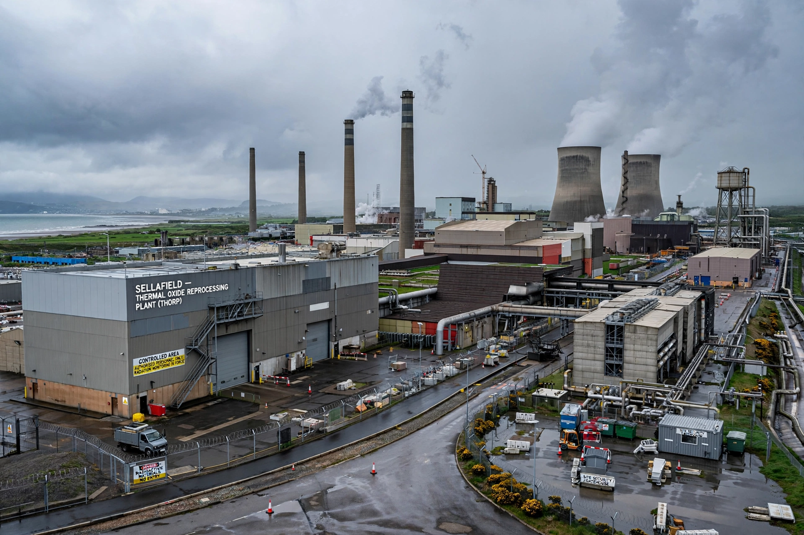

| Sellafield | |
|---|---|
 The Sellafield site, Cumbria | |
| Location | Seascale, Cumbria, England |
| Operator | Sellafield Ltd (for the Nuclear Decommissioning Authority) |
| Established | 1947 (as Windscale) |
| Status | Decommissioning; reprocessing ended 2022 |
Sellafield, formerly known as Windscale, is a large multi-function nuclear site close to Seascale on the coast of Cumbria, England. As of August 2022, primary activities are nuclear waste processing and storage and nuclear decommissioning. Former activities include nuclear power generation from 1956 to 2003 and nuclear fuel reprocessing from 1964 to 2022. The licensed site covers an area of 265 hectares and includes more than 200 nuclear facilities and more than 1,000 buildings. It is Europe's largest nuclear site and has the most diverse range of nuclear facilities in the world on a single site.
The site was established in 1947 on a former Royal Ordnance Factory as Britain's centre for plutonium production for nuclear weapons. The Windscale Piles produced weapons-grade plutonium; in October 1957 a fire in Pile No. 1 — the Windscale fire — became Britain's worst nuclear accident, releasing radioactive material across the surrounding countryside. The Calder Hall reactors on the site, opened in 1956, were the world's first commercial nuclear power station to generate electricity on an industrial scale. The Magnox and later THORP reprocessing plants handled spent fuel from British and foreign reactors for decades.
Reprocessing ended with the closure of THORP in 2018 and the Magnox plant in 2022. The site's mission is now hazard reduction and decommissioning, managed by Sellafield Ltd on behalf of the Nuclear Decommissioning Authority; the clean-up programme is expected to continue into the 22nd century at a cost exceeding £100 billion. Legacy facilities such as the Pile Fuel Storage Pond and the Magnox Swarf Storage Silo are among the highest-hazard nuclear facilities in Europe and are the focus of ongoing retrieval work (see nuclear decommissioning).
Besides the 1957 fire, Sellafield has experienced leaks, including the 2005 THORP leak of dissolved spent fuel that went undetected for months, and recurring concern over radioactive discharges into the Irish Sea, which historically made it the subject of controversy with Ireland and Norway.